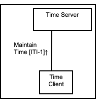
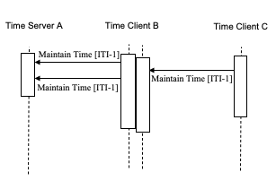

7 Consistent Time (CT)
The Consistent Time Integration Profile (CT) provides a means to ensure that the system clocks and time stamps of the many computers in a network are well synchronized. This profile specifies synchronization with a median error less than 1 second. This is sufficient for most purposes.
The Consistent Time Integration Profile defines mechanisms to synchronize the time base between multiple actors and computers. Various infrastructure, security, and acquisition profiles require use of a consistent time base on multiple computers. The Consistent Time Profile requires the use of the Network Time Protocol (NTP) defined in RFC1305. When the Time Server is grouped with a Time Client to obtain time from a higher tier Time Server, the Time Client shall utilize NTP. For some Time Clients that are not grouped with a Time Server, SNTP may be usable.
This profile was previously a portion of the Radiology Basic Security Profile, but it has a variety of other infrastructure uses.
Note: This profile corresponds to a portion of the IHE Radiology Technical Framework, Basic Security Profile (now deprecated). It is required by more than just radiology systems. It is needed by several of the profiles in the IHE IT Infrastructure and will also be needed by Cardiology. It is therefore being re-located from IHE Radiology into IHE IT Infrastructure. There are no changes to the requirements, so actors that supported the Radiology Basic Secure Node or Time Server do not need modification.
7.1 CT Actors/Transactions
Figure 7.1-1 shows the actors directly involved in the Consistent Time Profile and the relevant transactions between them. Other actors that may be indirectly involved because of their participation in profiles that require consistent time are not shown.
Figure 7.1-1: Consistent Time Profile Actor Diagram
Table 7.1-1 lists the transactions for each actor directly involved in the Consistent Time Integration Profile. In order to claim support of this integration profile, an implementation must perform the required transactions (labeled “R”).
Table 7.1-1: Consistent Time - Actors and Transactions
| Actors | Transactions | Optionality | Section |
| Time Server | Maintain Time [ITI-1] | R | ITI TF-2a: 3.1 |
| Time Client | Maintain Time [ITI-1] | R | ITI TF-2a: 3.1 |
7.1.1 CT Required Actor Groupings
An actor from this profile (Column 1) shall implement all of the required transactions and/or content modules in this profile in addition to all of the requirements for the grouped actor (Column 2).
Table 7.1.1-1: CT - Required Actor Groupings
| CT Actor | Actor(s) to be grouped with | Reference |
| Time Client | None | -- |
| Time Server | None | -- |
7.2 CT Actor Options
Options that may be selected for this integration profile are listed in the Table 7.2-1 along with the actors to which they apply.
Table 7.2-1: Consistent Time - Actors and Options
| Actor | Options | Volume and Section |
| Time Server | Secured NTP | ITI TF-2a: 3.1.4 -1 |
| Time Client | SNTP, Secured NTP | ITI TF-2a: 3.1.4 -1 |
7.3 Consistent Time Process Flow
This section describes the typical flow related to the Consistent Time Profile. In the process flow Figure 7.3-1, the Time Client B and Time Server B have been grouped. When a Client and Server are grouped, they utilize internal communications mechanisms to synchronize their time.
Figure 7.3-1: Basic Process Flow in Consistent Time Profile
The Time Client B maintains time synchronization with the Time Server A. The Time Server B is internally synchronized with Time Client B. The Time Client C maintains time synchronization with Time Server B.
The NTP protocol has been designed to provide network time services for synchronization with this kind of cascaded synchronization. The achievable accuracy is dependent on specific details of network hardware and topology, and on details of computer hardware and software implementation. The Time Server and Time Client are grouped to provide synchronization cascading and reduce network traffic.